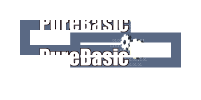

VectorSourceImage()
语法
VectorSourceImage(ImageID [, Alpha [, Width.d, Height.d [, Flags]]])概要
Selects an image as the source for vector drawing operations such as FillPath() or StrokePath(). These functions will apply pixels from the specified image to the drawing output wherever they draw something.
参数
ImageID Specifies the image to use as the source. Use the ImageID() function to get this value from an image. Alpha (optional) Specifies an optional alpha transparency to apply to the source image. This transparency is applied in addition to any transparent pixels already present in the source image. The default is value is 255 (no additional transparency). Width.d, Height.d (optional) Specifies an optional with and height for the image. The values are interpreted in terms of the #PB_Corrdinate_Source coordinate system. If no width and height are specified, then the dimensions of the source image (in pixels) are converted into the unit of the vector drawing output and used (i.e. the image has its original size). Flags (可选) Can be one of the following values: #PB_VectorImage_Default: Areas outside of the source image are transparent (default) #PB_VectorImage_Repeat : The source image is repeated to cover the entire drawing area
返回值
无.
备注
See the vectordrawing overview for an introduction to the different coordinate systems.
By transforming the #PB_Coordinate_Source coordinate system, the used source image can be transformed (moved, rotated, stretched, skewed). See the second example below for a demonstration.
Example: Repeated source image
If OpenWindow(0, 0, 0, 400, 200, "VectorDrawing", #PB_Window_SystemMenu | #PB_Window_ScreenCentered) CanvasGadget(0, 0, 0, 400, 200) LoadImage(0, #PB_Compiler_Home + "examples/Sources/Data/PureBasicLogo.bmp") If StartVectorDrawing(CanvasVectorOutput(0)) AddPathBox(50, 50, 200, 50) AddPathBox(150, 75, 200, 50) VectorSourceImage(ImageID(0), 255, ImageWidth(0), ImageHeight(0), #PB_VectorImage_Repeat) StrokePath(20) StopVectorDrawing() EndIf Repeat Event = WaitWindowEvent() Until Event = #PB_Event_CloseWindow EndIf
Example: Rotated and flipped source image
If OpenWindow(0, 0, 0, 400, 200, "VectorDrawing", #PB_Window_SystemMenu | #PB_Window_ScreenCentered)
CanvasGadget(0, 0, 0, 400, 200)
LoadImage(0, #PB_Compiler_Home + "examples/Sources/Data/PureBasicLogo.bmp")
LoadFont(0, "Impact", 20, #PB_Font_Bold)
If StartVectorDrawing(CanvasVectorOutput(0))
FlipCoordinatesY(50, #PB_Coordinate_Source)
RotateCoordinates(50, 50, -45, #PB_Coordinate_Source)
VectorSourceImage(ImageID(0), 255, ImageWidth(0), ImageHeight(0), #PB_VectorImage_Repeat)
VectorFont(FontID(0), 150)
MovePathCursor(20, 20)
DrawVectorText("TEXT")
StopVectorDrawing()
EndIf
Repeat
Event = WaitWindowEvent()
Until Event = #PB_Event_CloseWindow
EndIf
参阅
VectorSourceColor(), VectorSourceLinearGradient(), VectorSourceCircularGradient()
已支持操作系统
所有